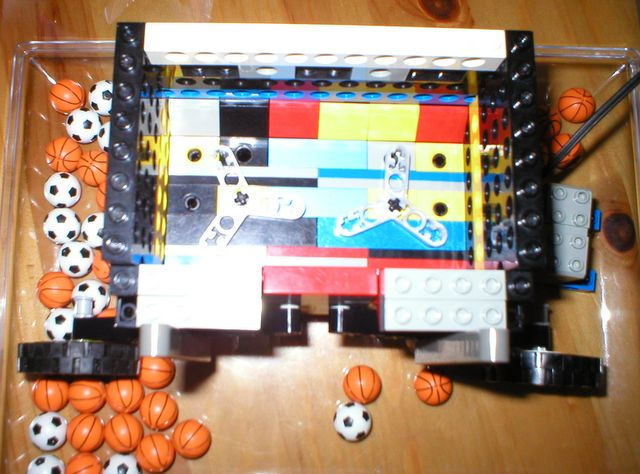

<span class="textbg">Lego Great Ball Contraption Stirrer Basket -- With the balls out - the stirrer arms can be seen. Note the slope bricks to keep balls from being stuck on the back wall </span><br> <span class="textsm"></span>
<p><span class="textreg">
<a href="target0.html">First</a> |
<a href="target5.html">Previous Picture</a> |
<a href="target7.html">Next Picture</a> |
<a href="target7.html">Last</a> | <a href="index.html">Thumbnails</a><br />
</span><hr size="1" />


<a href="index.html"></a></p>
</p>
